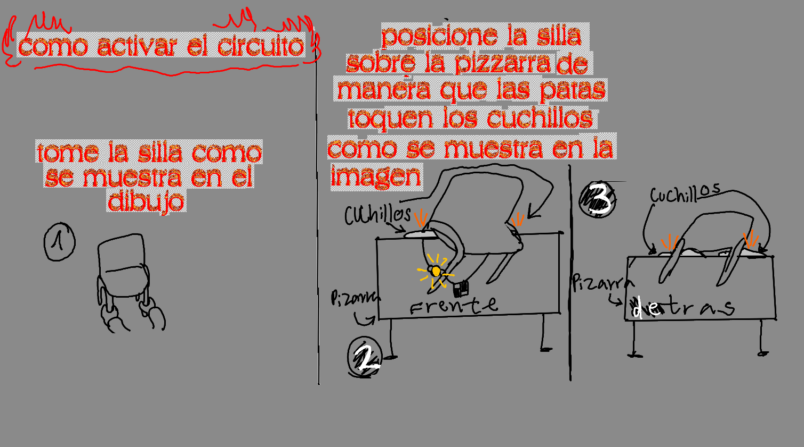
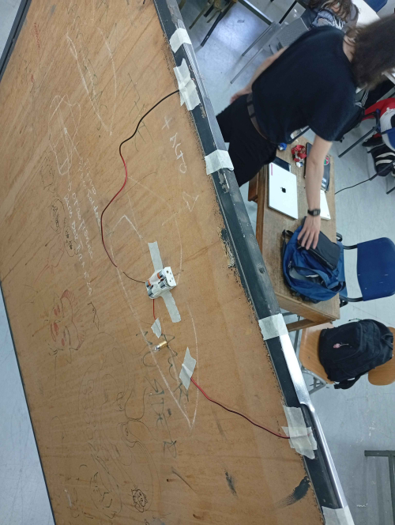
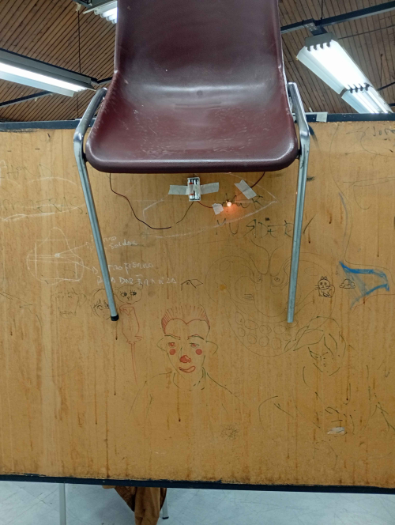

Para el circuito, queria hacer que fuera "incómodamente grande", lo que hice para lograr esto fue que tuvieras que tomar una silla para que tengas
que posicionarla sobre unos cuchillos que están sobre la pizarra, abajo se encuentra la guia de como encender la ampolleta
Aqui hay fotos del circuito, me parecio bastante complicado encontrar el punto justo de los cuchillos para que tuvieran conexion con el circuito y
la silla, pero lo logre utilizando 6 cuchillos, 3 por pata de silla
 Aqui con la ayuda de mi compañero, juntamos nuestros circuitos aqui esta el video de como funciona el circuito de dos interruptores
El circuito lo hice con mi compañero Vicente Torres